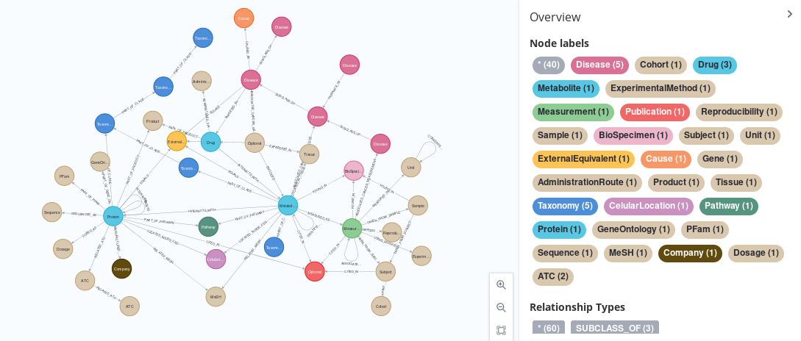

CanGraph.MeSHandMetaNetX package
In this page
CanGraph.MeSHandMetaNetX package#

This Git Project, created as part of my Master’s Intenship at IARC, contains a series of scripts that pulls information from a series of five databases from their native format (XML, CSV, etc) into a common, GraphML format, using a shared schema that has been defined to minimize the number of repeated nodes and properties. This databases are:
Exposome-Explorer: A hand-curated, high-quality database of associations between metabolites, food intakes and outakes and different diseases, specially cancers.
Human Metabolome DataBase: An detailed, electronic database containing detailed information about small molecule metabolites found in the human body.
DrugBank: A unique bioinformatics and cheminformatics resource that combines detailed drug data with comprehensive drug target information.
Small Molecule Pathway Database: An interactive database containing more than 618 small molecule pathways found in humans, More than 70% of which are unique to this DB
WikiData: The world’s largest collaboratively generated collection of Open Data worldwide.
Each of then have their unique advantages and disadvantages (size, quality, etc) but they have been chosen to work together and help in identifying metabolites and their potential cancer associations at IARC.
With regards to the schema, it can be consulted in detail in the new-schema.graphml file, which can itself be opened in Neo4J by calling: CALL apoc.import.graphml("new-schema.graphml", {useTypes:true, storeNodeIds:false, readLabels:True}) after placing it in your Neo4J’s import directory (you can find it in the settings shown after starting the server with sudo neo4j start). It consists of a simplification of all the nodes present on the old-schema.graphml file (which itself represents the five different schemas that our five databases natively presented), arrived at by merging nodes and changing relationship names so that they are unique (and, thus, more actionable). One property, LabelName has been added as a dummy name to generate the image you can see in the header.
This repo contains two kind of scripts: first, some build_database.py scripts, which contain the information to re-build the databases in the common format from scratch, and are located in subsequent subfolders named after the database they come from (more info can be consulted on them on their respective READMEs) and a common main.py script, which can be used to query for sub-networks based solely on info presented on a sample_input.csv database of identified compounds which we would like to annotate.
Intallation#
To use this script, you should first clone it into your personal computer. The easiest way to do this is to git clone the repo:
Install git (if not already installed) and other requirements. On linux:
sudo apt install git curlClone the repo:
git clone https://codeberg.org/FlyingFlamingo/graphify-databasesStep into the directory
cd graphify-databases
Once the project has been installed, you must run setup.py, a preparation script that guides you through the process of installing all five databases on your computer, so that then we can correctly process them and generate the sub-networks. You should also install the required python modules and run the setup script:
PIP install all dependencies:
pip install -r requirements.txtRun the setup script:
python3 setup.py
Once this has been done, you are ready to start using the main script!
NOTE: If you do not wish to use git, you can manually download the repo by clicking here
Usage#
To generate this sub-networks (the original idea of the project) you should run:
python3 main.py neo4jadress databaseusername databasepassword databasefolder inputfile
where:
neo4jadress: is the URL of the database, in neo4j:// or bolt:// format
username: the username for your neo4j instance. Remember, the default is neo4j
password: the password for your database. Since the arguments are passed by BaSH onto python3, you might need to escape special characters
databasefolder: The folder indicated to
setup.pyas the one where your databases will be storedinputfile: The location of the CSV file in which the program will search for metabolites. This file should be a Comma-Separated file, with the following format:
MonoisotopicMass, SMILES, InChIKey, Name, InChI, Identifier, ChEBI
All images in this repository are CC-BY-SA-4.0 International Licensed.
NOTE: When committing to the repo, try to use GitMojis to illustrate your commit :p
Important Notices#
Some databases are auto-integrated based on their URLs. This URLs, as well as those of existing dependencies, may change over time. Please make sure to have them updated in case you want to run the latest version of the databases
We have made our best efforts to make the script as multi-platform as possible; however, the script has been developed with Linux in mind, and you may need to install additional packages if you want to run it on Windows or MacOS. Please, check the
dependenciessection for more info
Dependencies#
This python package has the following known dependencies:
Package |
Description |
Order to install |
|---|---|---|
Python 3.8 |
the python programming language |
|
cURL |
command line tool for transferring data from URLs |
|
neo4j |
a graph dbms |
|
Alternatively, as a one-liner: sudo apt install python3 curl; python3 -c'import setup; setup.setup_neo4j("neo4j", True)
The package consists of the following modules:
CanGraph.MeSHandMetaNetX.build_database module#
A python module that provides the necessary functions to transition the MetaNetX database
(and related MeSH terms and KEGG IDs) to graph format, either from scratch importing all
the nodes (as showcased in CanGraph.MeSHandMetaNetX.main) or in a case-by-case basis,
to annotate existing metabolites (as showcased in CanGraph.main).
Note
You may notice some functions here present the **kwargs arguments option.
This is in order to make the functions compatible with the
CanGraph.miscelaneous.manage_transaction function, which might send back a variable
number of arguments (although technically it could work without the **kwargs option)
- add_chem_isom(filename)[source]#
A CYPHER query that loads the chem_isom.tsv file availaible at the MetaNetX site, using a graph format.
- Parameters
filename (str) – The name of the CSV file that is being imported
- Returns
A Neo4J connexion to the database that modifies it according to the CYPHER statement contained in the function.
- Return type
Note
For performance, it is recommended to split the file in 1 subfile for each row in the DataBase
- add_chem_prop(filename)[source]#
A CYPHER query that loads the chem_prop.tsv file availaible at the MetaNetX site, using a graph format.
- Parameters
filename (str) – The name of the CSV file that is being imported
- Returns
A Neo4J connexion to the database that modifies it according to the CYPHER statement contained in the function.
- Return type
Note
For performance, it is recommended to split the file in 1 subfile for each row in the DataBase
- add_chem_xref(filename)[source]#
A CYPHER query that loads the chem_xref.tsv file availaible at the MetaNetX site, using a graph format.
- Parameters
filename (str) – The name of the CSV file that is being imported
- Returns
A Neo4J connexion to the database that modifies it according to the CYPHER statement contained in the function.
- Return type
Note
For performance, it is recommended to split the file in 1 subfile for each row in the DataBase
- add_comp_prop(filename)[source]#
A CYPHER query that loads the comp_prop.tsv file availaible at the MetaNetX site, using a graph format.
- Parameters
filename (str) – The name of the CSV file that is being imported
- Returns
A Neo4J connexion to the database that modifies it according to the CYPHER statement contained in the function.
- Return type
Note
For performance, it is recommended to split the file in 1 subfile for each row in the DataBase
- add_comp_xref(filename)[source]#
A CYPHER query that loads the comp_xref.tsv file availaible at the MetaNetX site, using a graph format.
- Parameters
filename (str) – The name of the CSV file that is being imported
- Returns
A Neo4J connexion to the database that modifies it according to the CYPHER statement contained in the function.
- Return type
Note
For performance, it is recommended to split the file in 1 subfile for each row in the DataBase
Note
Some identifiers present the CL/cl prefix. Since I could not find what this prefix refers to, and since it only pertains to one single MetaNetX ID, we did not take them into account
Note
The “description” field in the DataBase is ignored, since it seems to be quite similar, but less useful, than the “name” field from comp_prop, which is more coherent with our pre-existing schema
- add_mesh_by_name()[source]#
A function that adds some MeSH nodes to any existing nodes, based on their Name property. Only currently active MeSH_IDs are parsed
- Returns
A text chain that represents the CYPHER query with the desired output. This can be run using:
neo4j.Session.run- Return type
Note
Only exact matches work here, which is not ideal.
Note
Be careful when writing CYPHER commands for the driver: sometimes, ” != ‘ !!!
Changed in version 1.0: Reverted the filtering to old version in order to make the search more specific
- add_pept()[source]#
A CYPHER query that all the protein availaible at the MetaNetX site, using a graph format and SPARQL.
- Returns
A text chain that represents the CYPHER query with the desired output. This can be run using:
neo4j.Session.run- Return type
Note
SPARQL was only used here because, unlike with the other files, there is no download available; also, given there are few proteins, Neo4J is able to process it without running out of memory (unlike what happened with the other fields)
Note
This is an autocommit transaction. This means that, in order to not keep data in memory (and make running it with a huge amount of data) more efficient, you will need to add
`:auto `when calling it from the Neo4J browser, or call it as`session.run( clean_database() )`from the driver.
- add_prefixes()[source]#
Add some prefixes necessary for all MetaNetX queries to work. This are kept together since adding extra prefixes does not increase computation time
- Returns
A text chain that represents the CYPHER query with the desired output. This can be run using:
neo4j.Session.run- Return type
- build_from_file(filename, driver)[source]#
A function able to build a portion of the MetaNetX database in graph format, provided that one MetaNetX CSV is supplied to it. This CSVs are downloaded from the website, and can be presented either as the full file, or as a splitted version of it, with just one item per file (which is recommended due to memory limitations). If you want all the database to be imported, you should run this function with all the CSVs that form it, as portrayed in the
mainmodule- Parameters
driver (neo4j.Driver) – Neo4J’s Bolt Driver currently in use
filename (str) – The name of the CSV file that is being imported
- Returns
This function modifies the Neo4J Database as desired, but does not produce any particular return.
A function that finds Metabolites related to a given MeSH ID, on the MeSH DataBase
- Parameters
mesh_id (str) – The MeSH_ID of the thing for which we want to find related proteins
- Returns
A text chain that represents the CYPHER query with the desired output. This can be run using:
neo4j.Session.run- Return type
Note
This is intended to be run as a execute_read, only returning synonyms present in the DB. No modifications will be applied.
Note
Could be turned into a read query by substituting
mesh_idwith' + n.MeSH_ID + '
- find_protein_data_in_metanetx()[source]#
A SPARQL function that annotates Protein nodes in an exiting Neo4J database by using the information provided by MetaNetX
- Returns
A text chain that represents the CYPHER query with the desired output. This can be run using:
neo4j.Session.run- Return type
Note
This function is partly a duplicate of self.find_protein_interactions_in_metanetx(), which was split to prevent timeouts
- find_protein_interactions_in_metanetx()[source]#
A SPARQL function that finds the Metabolites a given Protein (based on its UniProt_ID) interacts with, using MetaNetX.
- Returns
A text chain that represents the CYPHER query with the desired output. This can be run using:
neo4j.Session.run- Return type
Note
We are not using peptXref: since all proteins in MetaNetX come from UniProt, there is no use here
- find_synonyms_in_cts(fromIdentifier, toIdentifier, searchTerm)[source]#
Finds synonyms for a given metabolite in CTS, The Chemical Translation Service
- Parameters
- Returns
The requested synonym
- Return type
Note
Please, be sure to use a database name that is in compliance with those specified in CTS itself; if you dont, this function will fail with a 500 error
Note
To prevent random downtimes from crashing the function, any one URL will be tried at least 5 times before crashing (see: StackOverflow #9446387
- get_identifiers(from_sparql=False, **kwargs)[source]#
Part of a CYPHER query that processes the outcome from a SPARQL query that searches for information on MetaNetX It takes an original metabolite (n) and a row variable, which should have columns named external_identifier, cross_refference, InChIKey, InChI, SMILES, Formula and Mass with the adequated format; it is basically a code-reuser, not intended to be used separately.
- Parameters
from_sparql (bool) – A True/False param defining whether the identifiers are being parsed from a SPARQL query; default is False (i.e. imported from file)
**kwargs – Any number of arbitrary keyword arguments
- Returns
A text chain that represents the CYPHER query with the desired output. This can be run using:
neo4j.Session.run- Return type
Note
All HMDB matches might create a Metabolite without CHEBI_ID or CAS_Number, which would violate our schema. This will be later on accounted for.
Note
Some keys, such as VMH_ID, are not merged into their own node, but rather added to an existing one. This is because this do not prevously exist in our Schema, and might be changed in the future.
Note
We dont care about overwriting InChI and InChIKey because they are necessarily unique; the same is true for Mass and Formula, as they are not all that important. However, for HMDB ID and others, we will take care not to overwrite, which could mess up the DB
- get_kegg_pathways_for_metabolites()[source]#
A function that finds the Pathways a given Metabolite (based on its Kegg_ID) is a part of, using KEGG. This uses genome.jp’s dbget web service, since I honestly could not find a way to use KEGG’s SPARQL service (https://www.genome.jp/linkdb/linkdb_rdf.html) for that.
See also
Another possibility could be using Kegg’s Rest API
- Returns
A text chain that represents the CYPHER query with the desired output. This can be run using:
neo4j.Session.run- Return type
- read_synonyms_in_metanetx(query_type, query, **kwargs)[source]#
A SPARQL function that finds synonyms for metabolites, proteins or drugs based on a given query, using MetaNetX. At the same time, it is able to annotate them a bit, adding Name, InChI, InChIKey, SMILES, Formula, Mass, some External IDs, and finding whether the metabolite in question has any known isomers, anootating if so.
- Parameters
Returns:
- Raises
ValueError – If the query type is not one of those accepted by the function
Note
This is intended to be run as a execute_read, only returning synonyms present in the DB. No modifications will be applied.
- write_synonyms_in_metanetx(query, **kwargs)[source]#
A SPARQL function that finds synonyms for metabolites, proteins or drugs in an existing Neo4J database, using MetaNetX. At the same time, it is able to annotate them a bit, adding Name, InChI, InChIKey, SMILES, Formula, Mass, some External IDs, and finding whether the metabolite in question has any known isomers, anootating if so.
- Parameters
query (str) – The type of query that is being searched for. One of [“Name”,”KEGG_ID”,”ChEBI_ID”,”HMDB_ID”,”InChI”,”InChIKey”].
**kwargs – Any number of arbitrary keyword arguments
- Returns
A text chain that represents the CYPHER query with the desired output. This can be run using:
neo4j.Session.run- Return type
- Raises
ValueError – If the query type is not one of those accepted by the function
Note
This is intended to be run as a manage_transaction, modifying the existing database.
CanGraph.MeSHandMetaNetX.main module#
A python module that leverages the functions present in the build_database
module to recreate the MetaNetX database using a graph format and Neo4J,
and then provides an GraphML export file. It also annotates related MeSH_IDs and KEGG Pathway IDs
Please note that, to work, the functions here pre-suppose you have internet access, which will be used to download
MetaNetX’s TSVs under a folder provided as `sys.argv[4]`. (please ensure you have read-write access there)
and query some web SPARQL and REST web services.
For more details on how to run this script, please consult the package’s README